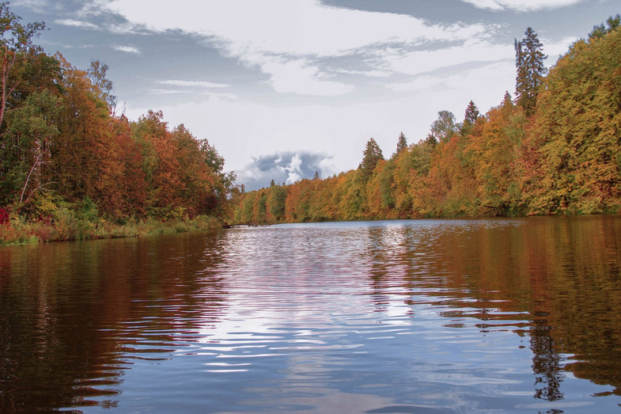
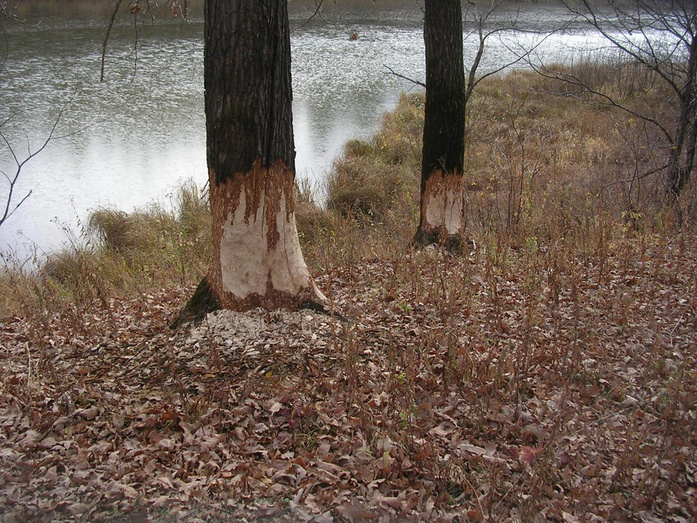
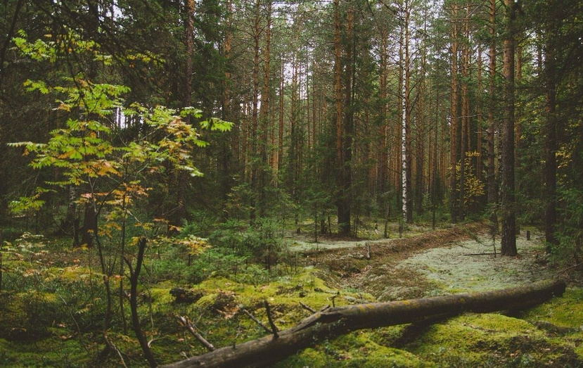
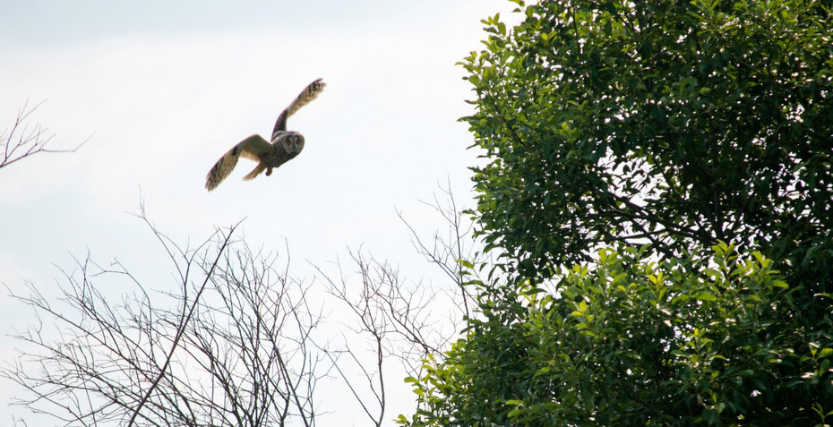
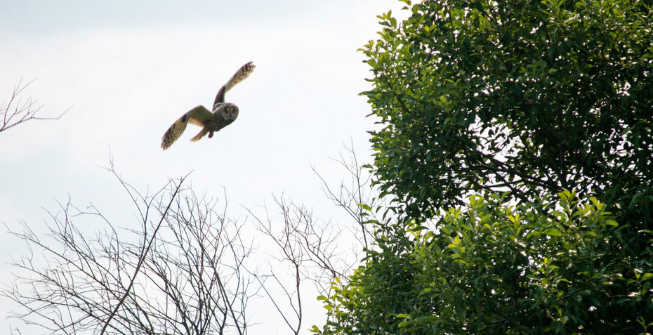
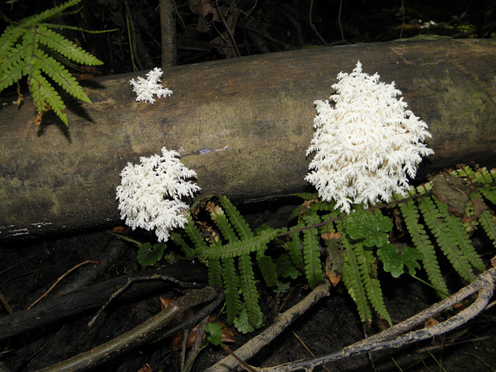
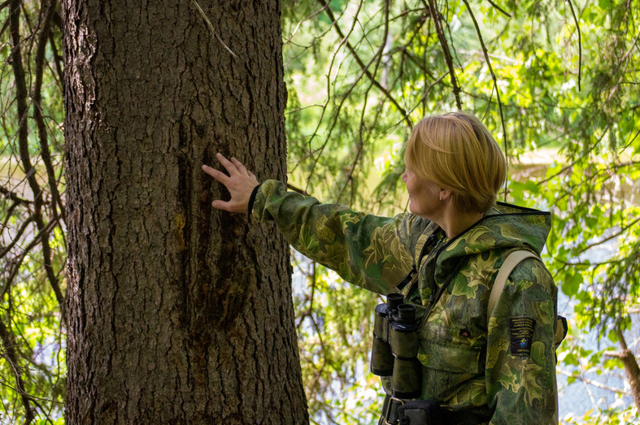
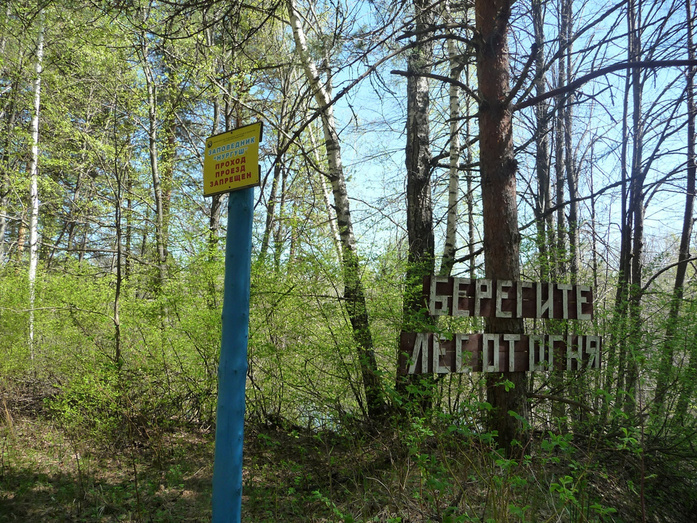

The only reserve in the entire Kirov region "Nurgush" is located in 2.5 hours from Kirov, where you can admire the calm and majestic beauty of Russian nature. On the Day of Nature Reserves and National Parks, which is celebrated on January 11, we decided to remember its history and show how the untouched forests and lakes of the Vyatka Region look today
The Nurgush Nature Reserve includes two areas: "Nurgush" in the territory of Kotelnichsky region and "Tulashor" in Nagorsky (located at a distance of 370 km). After "Tulashor" was added to "Nurgush" in 2010, the reserve area grew to 23449.7 hectares. Next, we will focus mainly on the Kotelnichsky area.
The land covered with forests and lakes acquired the protected status almost recently — in 1994. In the Soviet years, "Nurgush" occupied the territory of a hunting reserve, on the area of which not the entire natural complex was protected, as it is now. Nevertheless, it was the Soviet authorities who thought about preserving this natural pearl. Before the revolution, there were economic activities: people cut down young trees for making sled runners and horse-drawn arcs, fished, and hunted. And after collectivization, the poultry farm used the resources. A large-scale research of the territory necessary for the creation of the reserve was conducted by the famous local historian Alexander Fokin. He also gave the name of the reserve - by the name of Lake Nurguzh. Over time, the letter "z" turned into "s", and the emphasis shifted to the first "u". The origin of the word "Nurguzh" itself has many versions. Now it is believed that it has Mari roots. "Nur" is translated from Mari as "field", and "guzh", which was transformed into" gush", is"lowland".
One of the main purpose of the establishment of the reserve was to restore the almost completely destroyed beaver population. So first of all, the new reserve was populated with muskrats and beavers. Other animals were also brought to the reserve from all over the Soviet Union and the Kirov region. Beavers were originally from Belarus and the Voronezh region, muskrats - from the Belokholunitsky region, and raccoon dogs - from the Kalinin region. Plants brought from other regions also took root.
As a nature reserve "Nurgush" has existed for more than 40 years. Unfortunately, people did not always treat it carefully enough. So, in 1969, "Kirovskaya Pravda" reported that the Kotelnichsky forestry allowed some farms to prepare wood there for the manufacture of arcs and sled runners. As a result, 3 thousand elms and over a thousand oaks were cut down. But thanks to the efforts of the employees of the reserve, this natural oasis has been successfully preserved to this day. One of these keepers was the huntsman Ivan Andriyanov, who lived on the shore of Nurgush for three decades. In an interview with Kirovskaya Pravda, he said that poachers periodically looked into the reserve. After the dismissal of Ivan Andriyanov, the territory of the reserve was poorly guarded. Fishermen with nets were increasingly looking in there, wrote Pavel Borodin, Deputy Director for scientific work at Nurgush. To convey to Kirov residents the importance of nature conservation, the reserve organized a tourist route. In the 60s and 70s, it was visited annually by 600-700 tourists. Untouched by the axe forests and picturesque lakes still attract connoisseurs of Russian nature.
Today, any economic activity is prohibited on the entire territory of the reserve, the entire natural complex is protected: flora, fauna, soil, water, and so on. It is forbidden to collect mushrooms and berries and even pick flowers here, and you can only hunt with a camera. The main purpose of the creation of the reserve is to protect the Middle Taiga landscapes in the floodplain of the Vyatka.River in their pristine, natural state. The ecosystem functions on its own, as if people are not here and never were.

The abundance of lakes and rivers and large fish stocks, in its turn, make the reserve an attractive habitat for birds. Every year, the symbol of "Nurgush" — the white-tailed eagle, one of the largest birds of prey in Russia, settles here. The wingspan of the eagle reaches 230 centimeters. Black loons, black storks, whooping swans, eagle owls, blackbirds, kingfishers and even berkuts, which are very rare for our region, can also live in the reserve. In total, 197 species of birds listed in the Red Books of the Kirov region and Russia live on the territory of "Nurgush".
 

Almost the entire territory of the reserve — 72% — is occupied by forests that are atypical for the Kirov region. This is a continuous array of indigenous, undisturbed broad-leaved forests that penetrated 7-10 thousand years ago to their north-eastern limit in the European part of Russia. In the reserve you can see oaks, linden trees, elms, white willows and black poplars, and admire various flowers that are rarely found anywhere in the Kirov region.

Broad-leaved forests, as a rule, are characterized by a large species diversity. This also applies to animals. Nurgush is home to 65 species of animals listed in the Red Book of the Kirov region, including 22 species in the Red Book of Russia. These are the muskrat, the wood bat, the red vechernitsa and the European mink. The most part of the animals belong to the near-water inhabitants: "Nurgush" is inhabited by many beavers and muskrats. The familiar bears, wolves, hares can also wander through the forests of the reserve, and on the Tulashor site — northern deer, lynx and chipmunks.

But the tourist will see only the "ghost" of these animals - random tracks left by animals in places accessible to people, because ordinary people can only move around the reserve on special ecological trails. A little closer to the inhabitants of "Nurgush" can "get acquainted" only the employees of the reserve, who during the year inspect the territory, conduct environmental monitoring, maintain sanitary safety and educate visitors about the importance of caring for wildlife. Considering the huge number of unauthorized landfills in the Kirov region and the periodic release of petroleum products into rivers, air pollution by vehicles and companies, the preservation of the natural oasis is not just a job, but a real mission
